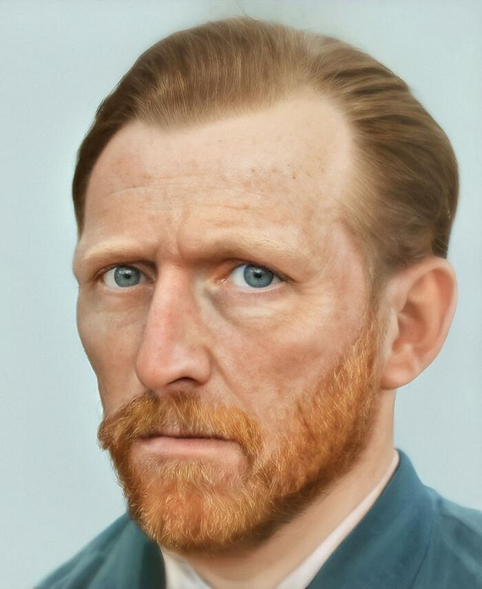
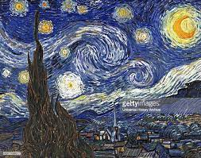
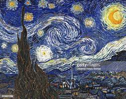

VINCENT VAN GOGH
BIOGRAFÍA
Vincent Van Gogh nació el 30 de marzo de 1853 en Groot-Zundert de Holanda y fue un pequeño inquieto, emocional con marcadas aptitudes hacia el dibujo. Pronto comenzó a trabajar en una galería de arte familiar donde creció su amor por la pintura. Años después, encerrado en la religión, se convirtió en pastor protestante y se trasladó a una región minera de Bélgica como misionero, donde comenzó a dibujar a la gente local. Aprovechando su estancia en Bélgica, se inscribió en la Academia de Bellas Artes de Bruselas en 1880, donde estudió dibujo y perspectiva.
Pero no comenzará a sorprender con sus creaciones hasta que se traslada a Arlés (sur de Francia) en 1888, donde descubre la luz del Mediterráneo y los colores.
La figura imprescindible en su vida fue su hermano menor Theo, marchante de arte, quien le prestó apoyo financiero y moral de manera continuada y desinteresada. La gran amistad que les unió está documentada en las numerosas cartas que se intercambiaron durante su vida.
OBRA PICTÓRICA

 
